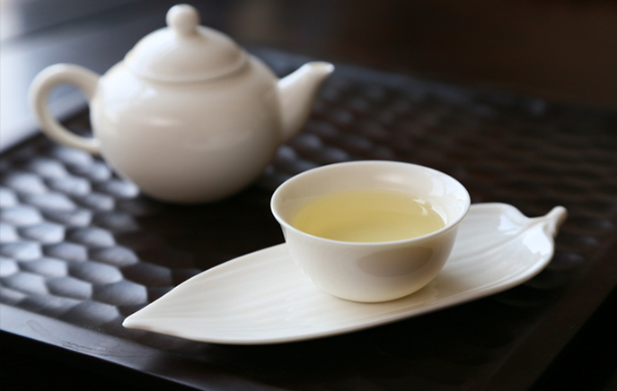

- 版权所有：安徽一笑堂茶业有限公司皖ICP备06012444号
- Copyrights © 2006-2008 All Rights Reserved
 产 品 详 情
产 品 详 情

蝙蝠洞瓜片
一笑堂蝙蝠洞瓜片产自六安瓜来片原产地——海拔804米的齐头山之神秘洞窟蝙蝠 洞,此处人迹罕至，悬崖如刀，涧深似海，洞中蝙蝠飞翔，如风似涛，有六安瓜片原 产圣地之美誉。 蝙蝠洞瓜片精选于谷雨看前后一周采摘的上等鲜叶，由具有30年以上工龄的制茶师 按传统工艺全手工制作。形如瓜子，色泽宝绿，叶面匀整，色泽碧如翡翠，香气高 长持久，滋味鲜醇回甘。公司拥有蝙蝠洞注你册商标，拥有蝙蝠洞口茶园100亩每 年产量极为有限，限量发售。人迹罕至，悬崖如刀，涧深似海，洞中蝙蝠飞翔，如 风似涛，有六安瓜片原产圣地之美誉。蝙蝠洞瓜片精选于谷雨前后一周采摘的上等 鲜叶，由具有30年以上工龄的制茶师按传统工艺该产品包装精美，全部采用环保材 料，红木外盒，内有四个花色各异的不锈钢内罐，上面印有吉、祥、如意四个字。 蝙蝠洞瓜片精选于谷雨前后一周采摘的上等鲜叶 全手工制作形如瓜子，色泽宝绿， 叶面匀整色泽碧如翡翠，香气高长持久，滋味鲜醇回甘。迹罕至，悬崖如刀，涧深 似海，洞中蝙蝠飞翔，如风似涛，有六安瓜片原产圣地之美誉。蝙蝠洞瓜片精选于 谷雨前后一周采摘的上等鲜叶，由具有30年以上工龄的制茶师按传统工艺该产品包 装精美.人迹罕至，悬崖如刀，涧深似海，洞中蝙蝠飞翔，如风似涛，有六安瓜片原 产圣地之美誉。蝙蝠洞瓜片精选于谷雨前后一周采摘的上等鲜叶，由具有30年以上 工龄的制茶师按传统工艺该产品包装精美。
上一篇：瓜片钻石系列
下一篇：瓜片铂金系列